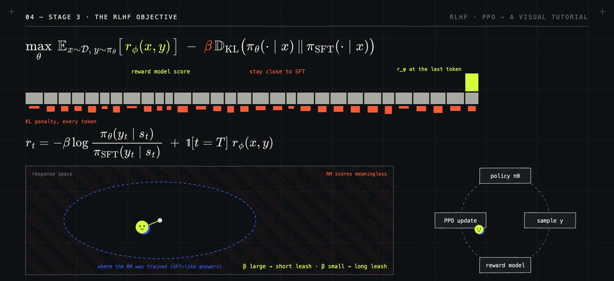

/ 8:20 VIDEO · 2 MIN READ
RLHF and PPO:
how the first assistants were built.
Reinforcement learning from human feedback (RLHF) trains a model with a reward learned from people's judgments, rather than one written as a program. It started in 2017, when Christiano et al. taught a simulated robot to do a backflip without anyone defining a backflip: a person watched pairs of short clips and picked the better one, about 900 times, and a model learned a reward from those choices. OpenAI then used it to summarize text (2020) and in InstructGPT (2022), a version of GPT-3 trained to follow written instructions instead of just continuing the text. ChatGPT, released in November 2022, was trained the same way.
That is the role RLHF played. It turned language models that only continue text into assistants, on tasks where no program can check the answer. It became the standard last stage of training, and most later methods change one of its parts rather than replace it.
It rests on one asymmetry, which is that people judge which of two answers is better far more easily than they write the best one. The recipe has three stages. First, supervised fine-tuning (SFT) on answers written by people teaches the format; call the resulting model \(\pi_{\text{SFT}}\). Second, a reward model \(r_\phi\) learns from human comparisons between a preferred answer \(y_w\) and a rejected one \(y_l\), using the Bradley–Terry model: \[P(y_w \succ y_l \mid x) = \sigma\big(r_\phi(x, y_w) - r_\phi(x, y_l)\big),\] where \(\sigma\) is the logistic function, so only differences in score matter. Third, the model \(\pi_\theta\) is trained to maximize that reward, with a penalty on how far it drifts from \(\pi_{\text{SFT}}\), measured by the Kullback–Leibler (KL) divergence: \[\max_\theta\; \mathbb{E}_{x,\; y \sim \pi_\theta}\big[r_\phi(x, y)\big] \;-\; \beta\, \mathrm{KL}\big(\pi_\theta(\cdot \mid x)\,\|\,\pi_{\text{SFT}}(\cdot \mid x)\big).\] The penalty matters because the reward model only saw answers like those of \(\pi_{\text{SFT}}\), and its scores mean little far from them; \(\beta\) sets how far the model may go.

The optimizer was Proximal Policy Optimization (PPO), a reinforcement-learning algorithm that takes small, clipped update steps. It is costly, because it keeps four models in memory: the model being trained, the reference \(\pi_{\text{SFT}}\), the reward model, and a critic that estimates the expected reward at each token. And it worked. Labelers preferred answers from the 1.3-billion-parameter InstructGPT to those of the 175-billion-parameter GPT-3. In 2023, Direct Preference Optimization (DPO) noticed that the penalized objective has a closed-form optimum, \[\pi^*(y \mid x) \;\propto\; \pi_{\text{SFT}}(y \mid x)\, e^{\,r(x, y)/\beta},\] so the reward can be expressed through the model itself, and preference pairs can train it directly, with no reward model and no sampling: \[\mathcal{L}_{\text{DPO}} = -\log \sigma\Big(\beta \log \frac{\pi_\theta(y_w \mid x)}{\pi_{\text{SFT}}(y_w \mid x)} - \beta \log \frac{\pi_\theta(y_l \mid x)}{\pi_{\text{SFT}}(y_l \mid x)}\Big).\]
A reward model is only as good as the comparisons behind it. Replacing the human labelers with a large language model (LLM) as judge, RL from AI feedback (RLAIF), keeps the loop but adds the judge's biases: such judges favour longer answers, the option they read first, and their own style. DPO avoids the reward model but learns only from fixed pairs, never from the model's own new answers.